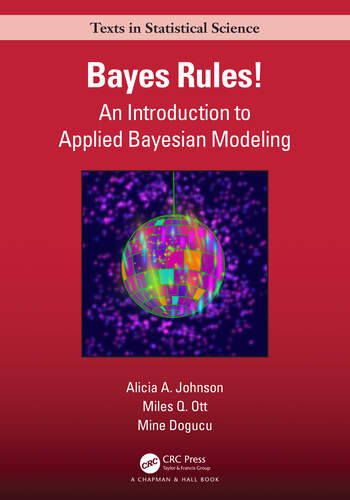
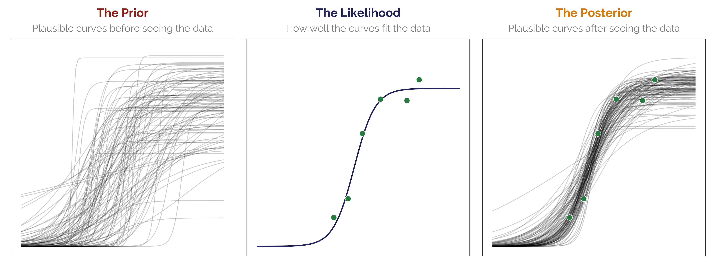

Main readings
Bayes Rules!
An Introduction to Applied Bayesian Modeling
Alicia A. Johnson, Miles Q. Ott, and Mine Dogucu


\[ \require{mathtools} \definecolor{bayesred}{RGB}{147, 30, 24} \definecolor{bayesblue}{RGB}{32, 35, 91} \definecolor{bayesorange}{RGB}{218, 120, 1} \definecolor{grey}{RGB}{128, 128, 128} {\color{bayesorange} P (\text{H} \mid \text{E})} = \frac {{\color{bayesred} P(\text{H})} \times {\color{bayesblue}P(\text{E} \mid \text{H})}} {\color{grey} {P(\text{E})}} \]
\[ {\color{grey} \overbracket[0.25pt]{\color{bayesorange} P (\text{Unknown} \mid \text{Data})}^{\text{Posterior}}} = \frac {{\color{grey} \overbracket[0.25pt]{\color{bayesred} P (\text{Unknown})}^{\text{Prior}}} \times {\color{grey} \overbracket[0.25pt]{\color{bayesblue} P (\text{Data} \mid \text{Unknown})}^{\text{Likelihood}}}} {{\color{grey} \underbracket[0.25pt]{{\color{grey} P(\text{E})}}_{\text{Average likelihood}}}} \]
\[ {\color{grey} \overbracket[0.25pt]{\color{bayesred} P (\text{Unknown})}^{\text{Prior}}} \times {\color{grey} \overbracket[0.25pt]{\color{bayesblue} P (\text{Data} \mid \text{Unknown})}^{\text{Likelihood}}} \propto {\color{grey} \overbracket[0.25pt]{\color{bayesorange} P (\text{Unknown} \mid \text{Data})}^{\text{Posterior}}} \]